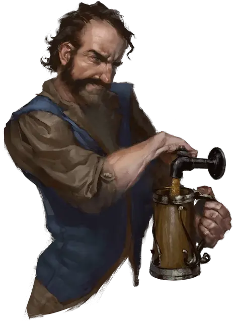

Дюрнан
Durnan
Средний Гуманоид (Человек), нейтральный, именной НИП

Класс Доспеха 16 (эльфийская кольчуга)
Хиты 144 (17к8 + 68)
Скорость 30 футов
| мод | спас | ||
|---|---|---|---|
| СИЛ | 18 | +4 | +8 |
| ЛОВ | 15 | +2 | +2 |
| ТЕЛ | 18 | +4 | +8 |
| мод | спас | ||
|---|---|---|---|
| ИНТ | 13 | +1 | +1 |
| МДР | 12 | +1 | +1 |
| ХАР | 10 | +0 | +0 |
Навыки Атлетика +8, Восприятие +5
Чувства пассивное Восприятие 15
Языки Общий, Дварфийский
Опасность 9 (5000 опыта)
Бонус мастерства +4
Особенности
Особое снаряжение. Дюрнан использует меч остроты (двуручный меч), именуемый Гримволт. Он носит сапоги ходьбы и прыжков, кольцо отражения заклинаний и эльфийскую кольчугу.
Упорный (перезарядка после продолжительного отдыха). Дюрнан может перебросить проваленный спасбросок, и обязан использовать новый результат.
Отражение заклинаний. Пока Дюрнан носит кольцо отражения заклинаний, он совершаете с преимуществом спасброски от заклинаний, нацеленных только на него (не обладающих зонами воздействия). Кроме того, если у него выпадет «20» при спасброске от заклинание с уровнем не больше 7-го, заклинание не оказывает на него никакого эффекта, и вместо этого нацеливается на заклинателя, используя уровень ячейки, Сл спасброска, бонус атаки и базовую характеристику самого заклинателя.
Действия
Мультиатака. Дюрнан совершает четыре рукопашные атаки оружием.
Гримволт. Рукопашная атака оружием:+8 к попаданию, досягаемость 5 футов, одна цель. Попадание: 11 (2к6 + 4) рубящего урона. Если цель— объект, попадание вместо этого наносит16 рубящего урона. Если цель— существо и Дюрнан выбрасывает «20» при броске атаки, цель дополнительно получает 14 рубящего урона и Дюрнан снова бросает к20. Если снова выпадает «20», то он отрубает одну из конечностей цели. Если у существа не было конечностей, он отрубает часть его тела.
Двойной арбалет. Дистанционная атака оружием: +6 к попаданию, дистанция 60/240 футов, одна цель. Попадание: 13 (2к10 + 2) колющего урона.
Описание
Дюрнан — владелец «Зияющего портала». Хоть он и выглядит как человек средних лет, чьи лучшие дни уже позади, у Дюрнана острый ум, а когда надо, он способен помахать мечом. Он не любит рассказывать о своём прошлом, особенно о временах, когда был искателем приключений.
Если у Дюрнана и есть живые родственники, он о них не упоминает. Он вообще никогда не скажет двух слов, когда хватит одного. У него мрачное чувство юмора и ни капли жалости к тем, кто рискует спускаться в Подгорье.
Гримволт, свой магический двуручный меч, он держит под стойкой и способен рубить им пополам столы. У него также есть двойной арбалет (тяжёлый арбалет с уменьшенной дистанцией, который зато стреляет сразу двумя болтами по одной цели). Но обычно, если затевается драка, он предпочтёт сперва обойтись кулаками или метко брошенной кружкой.
Дюрнан не уходит далеко от «Зияющего портала», а если нужно уладить дела, посылает подчинённых.
Когда в настроении, он может мягко отговорить симпатичных «выскочек» от спуска в Подгорье, если считает, что они там не выживут. Он также может подсказать искателям приключений, какие из завсегдатаев таверны могут им помочь или поделиться ценными сведениями.